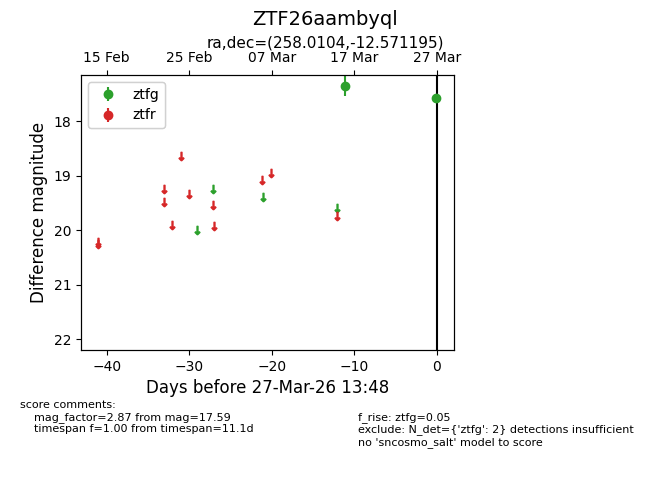
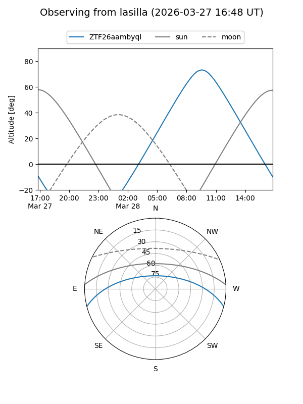
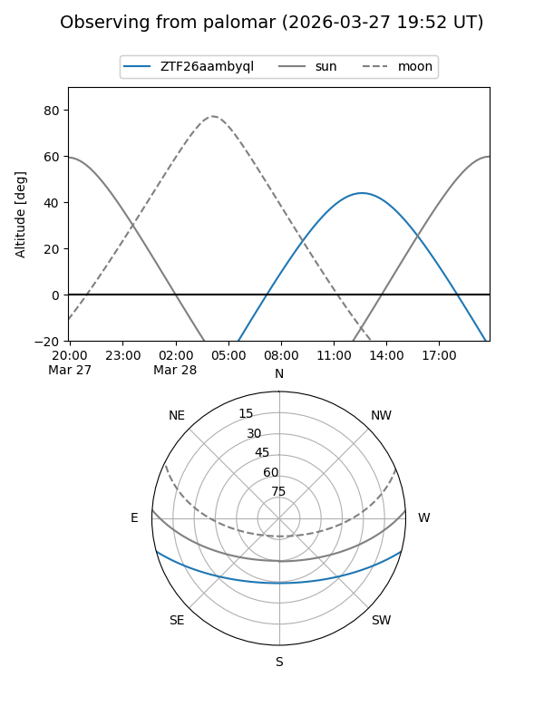

ZTF26aambyql
Target ZTF26aambyql at 2026-03-27 13:50
Aliases and brokers:
FINK: link
Lasair: link
ALeRCE: link
alt names
ZTF26aambyql (ztf,fink_ztf)
Coordinates:
equatorial (ra, dec) = 258.0104,-12.57119
equatorial (HMS+DMS) = 17:12:02.50,-12:34:16.30
galactic (l, b) = (9.6699,+15.41372)
Flags:
Photometry:
last ztfg=17.59
2 ztfg detections
Lightcurve

Visibility


Additional plots